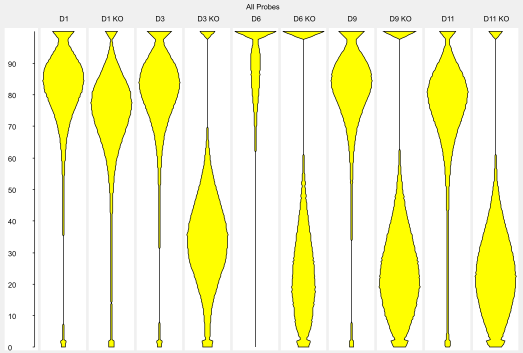

The Bean Plot is a view designed to let you compare the distribution of probe values across several data stores, or several probe lists across a single data store.

A bean plot is a more complete way to represent a distribution than more summarised plots such as a box whisker plot. It shows the smoothed density of points over a window called the 'bandwidth' so you can more easily represent more complex distributions accurately.
In SeqMonk the bandwidth used is 5% of the total range of the quantitation displayed in the plot.
To create a Bean plot select Plots > Bean Plot from the main menu. You can then choose whether you want the plot to show all visible data stores for the currently active probe list or whether you want to select a set of probe lists to plot for the currently active data store. The plot window will appear immediately and the individual plots will appear as they are calculated. This may take a few seconds for larger data sets.
Where multiple plots are drawn they will all be placed onto the same scale so you can quickly compare between them.
Within the Bean plot menu you can choose to plot either: